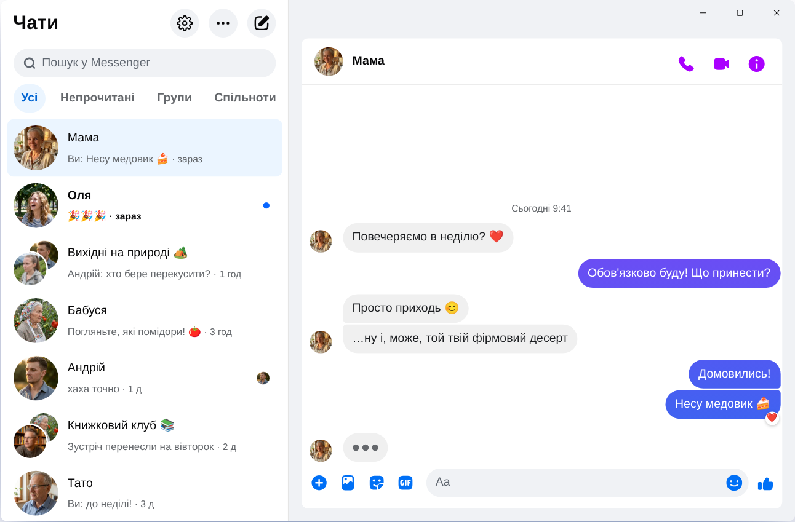

Chatpane / Windows
Оновлено в листопаді 2026
Як мати Messenger на комп'ютері у 2026
Meta закрила застосунок Messenger для Windows 15 грудня 2025 року, а messenger.com тепер перекидає на Facebook. Ось що працює сьогодні на комп'ютері чи ноутбуці з Windows 10 або 11.
Безкоштовний, з відкритим кодом · Windows 10 і 11 · Не застосунок Meta
Коротко
Офіційного застосунку Messenger для комп'ютера більше немає. Meta прибрала його з Microsoft Store, а з квітня 2026 року Messenger на комп'ютері працює лише на facebook.com/messages, усередині Facebook.
Якщо хочете Messenger в окремому вікні, без стрічки та Reels, спробуйте Chatpane: безкоштовний застосунок з відкритим кодом для Windows, який показує лише ваші чати. Це незалежний проєкт, а не продукт Meta.
Обережно з «Messenger для ПК» на сайтах завантажень
Багато старих інструкцій досі радять шукати «Messenger» у Microsoft Store або завантажити інсталятор Messenger 2250.1 із сайтів із програмами. Це нічого не дасть: це саме той застосунок, який Meta вимкнула у грудні 2025 року, і після запуску він лише відкриває Facebook.
Не вводьте пароль від Facebook у програмі чи на сторінці невідомого походження. Якщо вам пропонують «Messenger для ПК» з власним вікном входу, будьте обережні.
Що сталося з Messenger для Windows?
У 2024 році Meta замінила застосунок для Windows на запаковану вебверсію. У жовтні 2025 року компанія оголосила про його закриття та прибрала його з Microsoft Store, а 15 грудня 2025 року він перестав працювати. У квітні 2026 року закрили й messenger.com. Подробиці й дати читайте в матеріалі чому не працює Messenger на комп'ютері.
Ваші варіанти
Як користуватися Messenger у Windows
Chatpane у Windows
Chatpane відкриває той самий Messenger, що й у браузері, тож усі ваші чати, групи, дзвінки та фото на місці й синхронізуються з телефоном. Зникає лише решта Facebook.
- Лише Messenger. Стрічку, Reels, Marketplace і пошук Facebook приховано.
- Корисні сповіщення. Відповідайте, реагуйте, позначайте як прочитане або вимикайте звук прямо зі сповіщення, не відкриваючи вікно. Зручно, якщо основне листування у вас у Telegram чи Viber, а Messenger потрібен для тих, хто пише лише туди.
- Панель завдань і трей. Кількість непрочитаних на значку, запуск разом із Windows і робота в системному треї після закриття вікна.
- Приватність. Приховуйте, що ви друкуєте, приховуйте імена та фото під час показу екрана й блокуйте аналітичні запити Facebook (увімкнено за замовчуванням).
- Українською. Chatpane використовує мову вашого комп'ютера, тож його меню та налаштування відображаються українською.

Як встановити
- Завантажте інсталятор для Windows. Якщо у вашому комп'ютері процесор ARM, візьміть інсталятор ARM64.
- Запустіть його. Інсталятори Chatpane для Windows поки не мають цифрового підпису, тому SmartScreen може показати «Windows захистила ваш ПК». Натисніть «Докладніше», а потім «Усе одно запустити». Завантажуйте Chatpane лише з chatpane.app або GitHub.
- Увійдіть у свій звичний акаунт Facebook. Чати з'являться одразу.
Не хочете нічого встановлювати? Портативна версія (.zip) працює без інсталятора.
Часті питання
Питання про Messenger на комп'ютері
Chatpane безкоштовний?
Так. Жодної ціни, підписки чи реклами. Chatpane має відкритий код за ліцензією MIT, а сам код опубліковано на GitHub, тож перевірити його може будь-хто.
Це офіційний застосунок Messenger?
Ні. Chatpane є незалежним проєктом, не пов'язаним із Meta. Він показує справжній Messenger з facebook.com/messages в окремому вікні, тож ваші повідомлення й далі проходять через Messenger і на них поширюються умови Meta.
Чи працює він без акаунта Facebook?
Ні. З квітня 2026 року Meta дозволяє користуватися Messenger без акаунта Facebook лише в мобільному застосунку. На комп'ютері і Chatpane, і будь-який інший спосіб потребують акаунта, з яким можна увійти на facebook.com.
Чи працює він у Windows 10?
Так, у Windows 10 і 11. Chatpane використовує Microsoft Edge WebView2, який уже є у Windows 11. У Windows 10 інсталятор завантажить його, якщо його бракує.
Чи працюють відеодзвінки?
Так. Це повноцінний Messenger, тож голосові та відеодзвінки відкриваються в окремому вікні, як і на facebook.com.
Отримати Chatpane
Безкоштовно й з відкритим кодом. Завантажується за секунди - це лише близько 4 MB.
Старіший Intel Mac? Intel .dmg
Повний список із контрольними сумами - на
GitHub
- або brew install --cask kristofferR/tap/chatpane